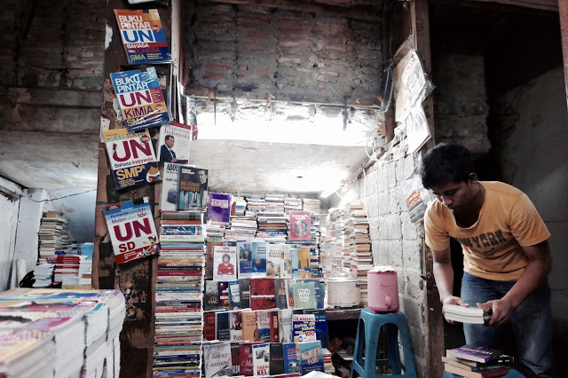
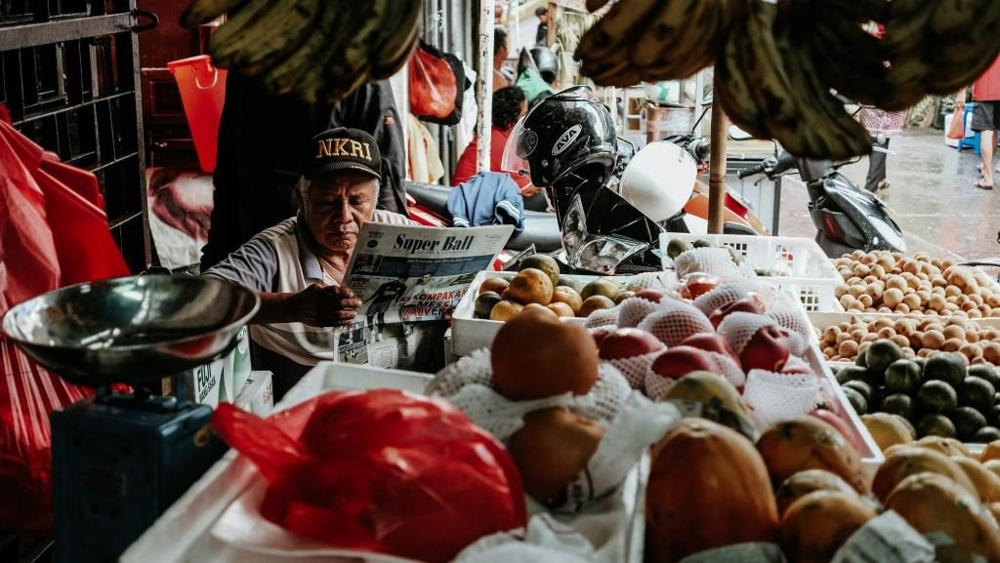
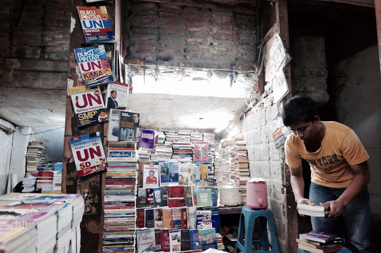
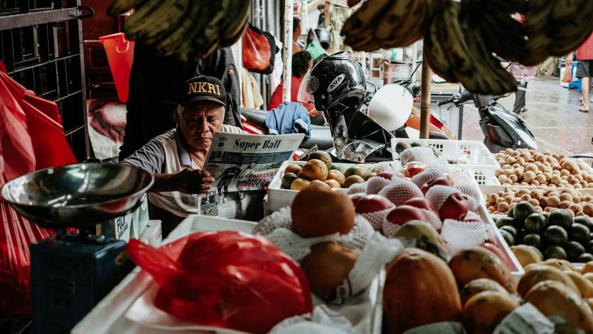

Komunitas photography : Hunting Pasar Jakarta
19 Juni, 2019 Views: 3,466,987Hunting Pasar merupakan komunitas penggiat foto dan videografi dengan objek utama yakni pasar tradisional. Hunting Pasar pertama kali diciptakan pada tanggal 7 januari 2018, oleh Bagoes Kresnaan (30) bersama istrinya Astri Wulandari (28) di Yogyakarta. Berawal dari kesenangannya dengan pasar tradisional dan memotret, kegiatan yang dilakukan oleh pasangan suami istri di setiap akhir pekan ini, menjelma jadi kegiatan yang diikuti oleh penggiat foto dan videografi dari 37 kota di seluruh Indonesia. Berawal dari kota Jogja, Hunting Pasar menjelma menjadi sebuah komunitas yang tersebar di lebih dari 37 kota di seluruh Indonesia. Kota-kota besar seperti, Jakarta, Bandung, Semarang, Surabaya, Bali, Medan, Makassar hingga Sorong pun, juga sudah mulai aktif menggerakkan komunitas yang awalnya hanya bertemu lewat media sosial Instagram ini. Tercatat hingga bulan April 2018 sudah ada lebih dari 5,000 member aktif yang hunting ke pasar setiap akhir pekan.
Aktivitas rutin kami adalah setiap akhir pekan mengunjungi pasar untuk sarapan bersama dan melakukan hunting foto / video. Tak dibatasi oleh syarat penggunaan kamera tertentu, hal ini menjadikan lebih banyak member yang ingin belajar namun dengan alat seadanya dapat tetap ikut berkomunitas. Tak hanya hunting bersama, setiap bulan sekali beberapa region juga mulai mengadakan event bulanan berupa workshop fotografi / videografi dengan mengundang beberapa praktisi untuk dapat menularkan ilmu mereka kepada member yang kebanyakan haus akan ilmu. “Fokus kita sementara masih ke edukasi untuk member supaya bisa membuat karya yang baik dan mengerti dasar-dasar foto maupun video yang perlu dikuasai.” menurut Wijoseno Aji (35) salah satu praktisi foto sekaligus pengurus Inti Hunting Pasar region Jogja.
 


